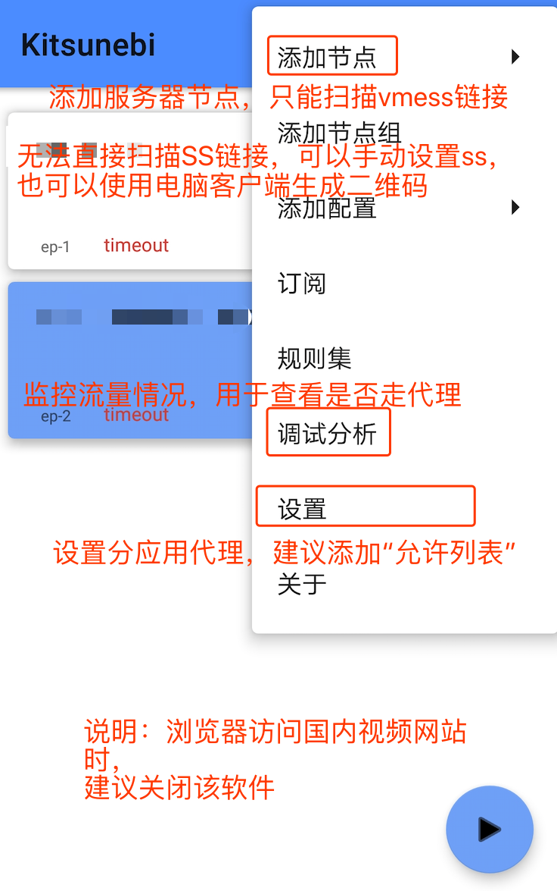
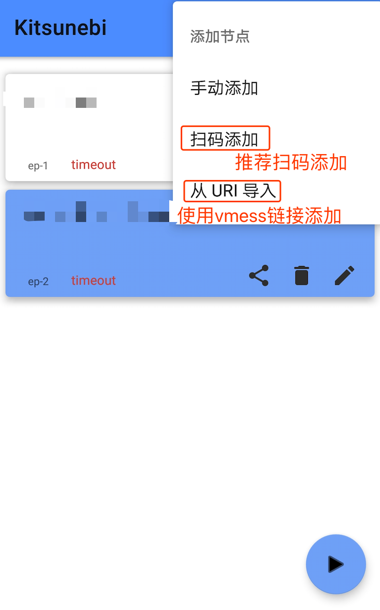
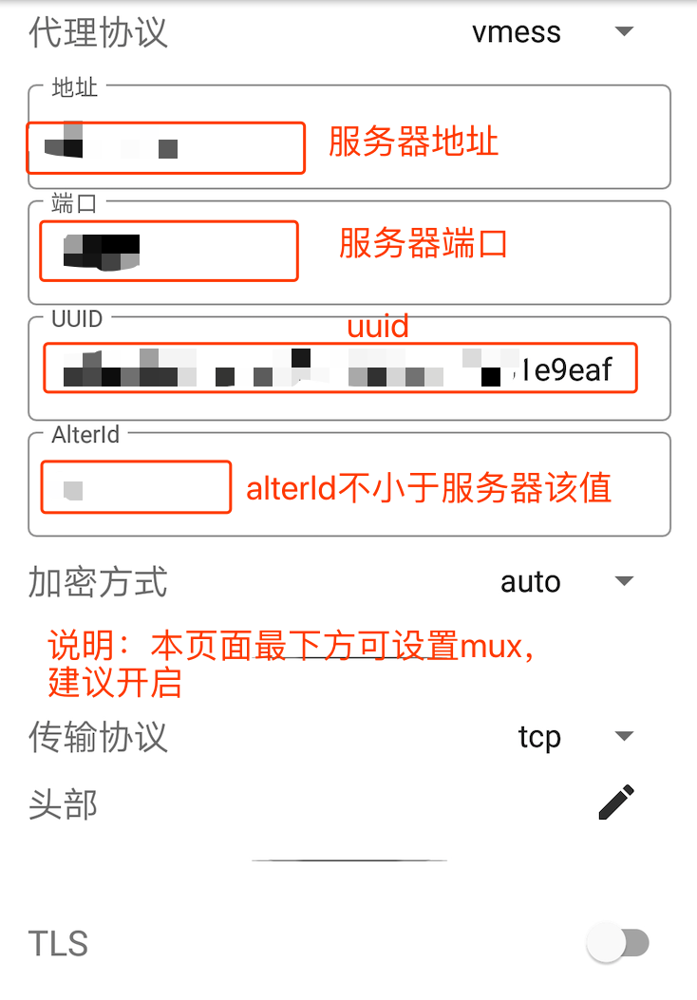

安卓 Kitsunebi 客户端配置3步教程
-
安卓系统下可以使用Kitsunebi这款客户端，配置简单功能齐全。默认直接开启全局模式，所有流量都走代理。需要在设置中修改。
-
第一步：软件菜单栏。点击右上角的按钮可以打开菜单栏，其中几个常用的菜单项如图中标示。其中设置中建议开启“分应用代理”-“允许列表”

-
第二步：导入服务器配置的方式。建议二维码导入，没有二维码可以用vmess链接导入，都没有就手动输入吧。

-
第三步：手动设置服务器参数。几个必要参数如图所示。页面最下方的mux建议开启。
